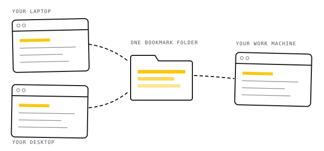
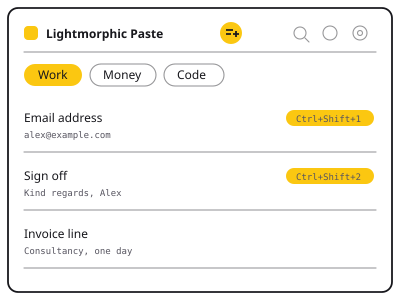
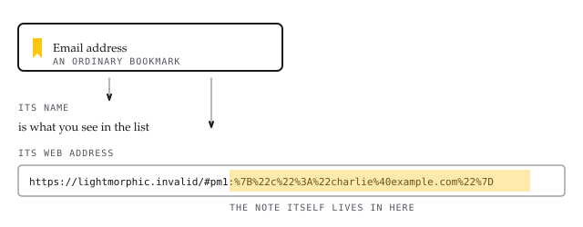
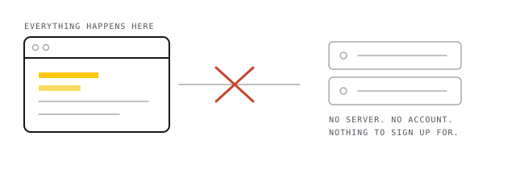

The lines you paste all the time, kept in
Your email address. A postal address. A sign-off. A reference number. Lightmorphic Paste keeps them a click away, and stores them as ordinary bookmarks, so they follow you between computers with no account and no server anywhere.

A short list of text, one click away
Click the toolbar icon and your saved lines are there. Click one and it is on your clipboard. Turn on one setting and a click drops the text straight into whatever box you were typing in instead.
Notes go into tabs, up to six of them with seven letters each, so a handful of notes stays a handful rather than a wall. Drag them into whatever order suits you.

Why bookmarks, of all things
Every other tool like this needs somewhere to keep your text. That means an account, a server, a company, and a promise. Lightmorphic Paste uses something your browser already syncs, already backs up, and already lets you see: a bookmark folder.
A note is one bookmark. Its name is the note's name. The text itself is tucked into the bookmark's web address, which is why it travels wherever your bookmarks travel.

That has a consequence worth saying out loud, and Lightmorphic Paste says it to you the first time you open it: your notes are as visible as any other bookmark. Anyone who can open your browser can read them. Keep passwords and card numbers out of it and use a password manager for those.
Installing it
It comes from the Chrome Web Store, and that is the only place it comes from.
Get Lightmorphic Paste from the Chrome Web Store. It works in Chrome, Brave, Vivaldi, Edge and other Chromium browsers, and updates arrive on their own.
What it never does
Lightmorphic Paste makes no network requests of any kind. Not one. There is no server to talk to, no analytics, no advertising, no crash reporting, and nothing that could be switched on later without you noticing, because the code is right there for you to read.

- No account, no sign-in, no email address collected.
- No tracking of any kind.
- It asks for no access to the websites you visit.
- Uninstalling it leaves your notes behind, because they are bookmarks.
Open source, and small enough to actually read
The whole extension is nine files of plain JavaScript, HTML and CSS. No build step, no bundler, no minifier, no framework. What is in the repository is exactly what runs in your browser. You can read it in an afternoon and satisfy yourself it does what this page claims.
It is released under the GNU General Public License v3. You may use it, study it, change it and pass it on, provided anything you build from it stays free in the same way. A licence that cannot be quietly closed up later.
Short answers
Is Lightmorphic Paste free?
Yes. It is free software under the GNU General Public License v3, and there is nothing to pay for now or later. There is no paid tier.
Do my notes sync between computers?
Yes, if your browser's own bookmark sync is turned on. Notes are bookmarks, so they travel with the rest of your bookmarks. Lightmorphic Paste is not involved in the syncing and cannot see it.
Which browsers does it work in?
Chrome, Brave, Vivaldi, Edge and any other Chromium-based browser.
Can I use it without a Google account?
Yes. Download it from this site and load it yourself. The Chrome Web Store is offered only as a convenience for automatic updates.
Is it safe to keep passwords in it?
No. Notes are bookmarks, so anyone who can open your browser can read them. Use a password manager for passwords, card numbers and anything else private.